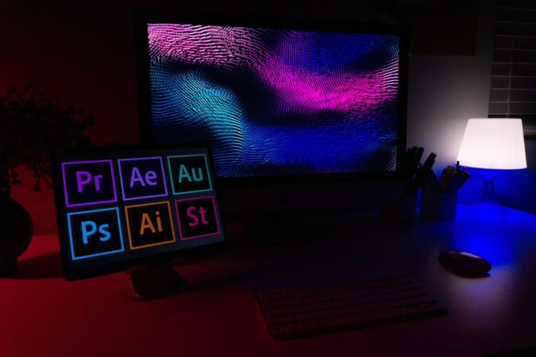
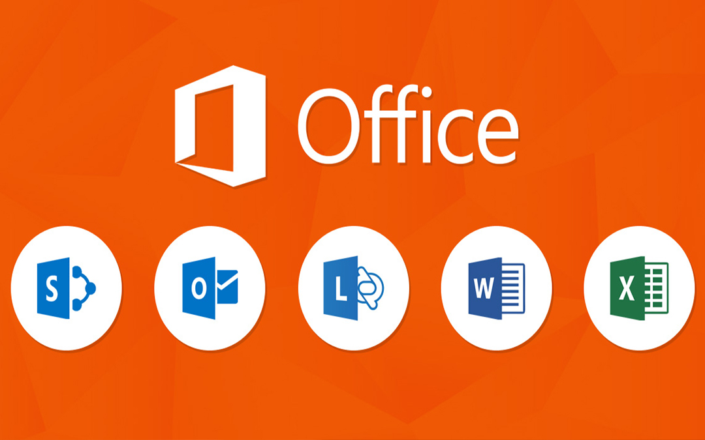

Courses
1. Web Development

Web development is the process of creating websites and web applications. You will learn how to build responsive and user-friendly websites using HTML, CSS, and JavaScript. This includes designing web pages, adding functionality, and ensuring they work well on all devices. You will also explore backend technologies to manage website data and create dynamic features. This skill is perfect for anyone interested in building their own websites or pursuing a career as a web developer.
Course Content:
- Introduction to web development and its importance
- HTML basics: Elements, tags, and attributes
- CSS for styling: Colors, fonts, layout, and positioning
- Basic JavaScript: Functions, variables, events, and loops
- Web design principles: User experience (UX) and responsive design
- Introduction to web hosting and domain management
- Practical exercises on building simple websites
2. Graphic Design
Graphic design is about creating visual content like posters, logos, social media posts, and advertisements. You will learn to use tools like Adobe Photoshop, Illustrator, and Canva to bring your ideas to life. The focus is on designing eye-catching and professional visuals for businesses, events, and personal projects. This skill helps you communicate ideas creatively and effectively, making it ideal for creative minds.
Course Content:
- Basics of graphic design: Elements and principles of design
- Introduction to design software: Adobe Photoshop, Illustrator, or GIMP
- Color theory and typography
- Creating logos, business cards, and basic graphics
- Image editing and manipulation techniques
- Understanding vector and raster graphics
- Layout design and composition for print and web
- Practical design projects (e.g., posters, flyers, social media graphics)
3. MS Office
MS Office includes tools like Word, Excel, PowerPoint, and Outlook that help you work smarter. You will learn how to create documents, manage data, make presentations, and organize emails. These skills are useful for students, professionals, and anyone who wants to improve their productivity at work or school.
Course Content:
- Microsoft Word: Creating, formatting, and editing documents
- Microsoft Excel: Introduction to spreadsheets; working with formulas, charts, and data analysis tools
- Microsoft PowerPoint: Creating presentations; slide design principles
- Microsoft Outlook: Setting up email accounts; managing emails, calendars, and contacts
4. Database Management Systems (DBMS)

Database management systems help you store, organize, and manage information. You will learn how to use databases, write SQL queries, and design systems that handle data securely and efficiently. This is important for managing large amounts of information in businesses, apps, or websites.
Course Content:
- Introduction to databases: What they are and why they are important
- Relational databases: Tables, rows, and columns
- Introduction to SQL (Structured Query Language)
- Data normalization: First, second, and third normal forms
- Basic database management: Backup, recovery, and security
5. Networking Basics
Networking basics teach you how computers and devices connect and communicate. You will learn about IP addresses, protocols, and setting up simple networks. This is a great starting point for anyone who wants to understand how the internet works or pursue a career in IT and networking.
Course Content:
- Introduction to networking: What is a network and why is it important?
- Types of networks: LAN, WAN, MAN, and the Internet
- Network devices: Routers, switches, hubs, and access points
- IP addressing and subnetting basics
- TCP/IP model and OSI model: Layers and protocols
- Wireless networks: Wi-Fi and Bluetooth
- Basic troubleshooting techniques for network issues